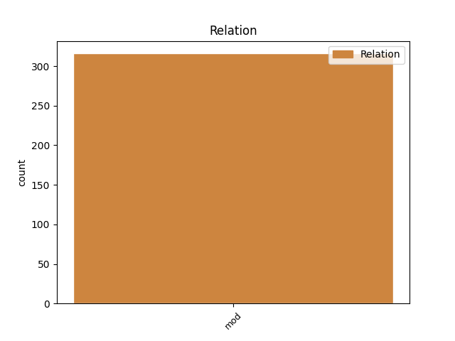
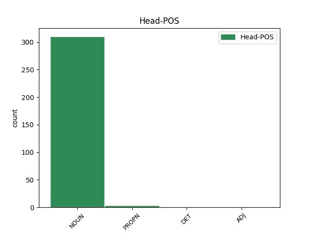
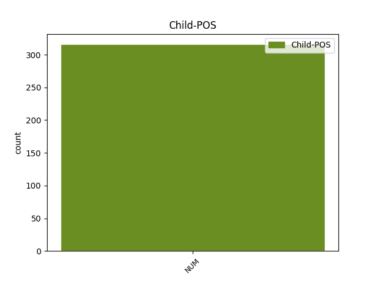

Distribution of features within this leaf



Agreement Rules sorted by frequency.
- When the dependent token is the modifer(mod) of the head token, and the dependent token is NUM.
1 Naime _ _ _ _ 0 _ _ _
2 , _ _ _ _ 0 _ _ _
3 2016. _ _ _ _ 0 _ _ _
4 jedan jedan NUM Mlcmsn Case=Nom|Gender=Masc|Number=Sing|NumType=Card 6 mod _ _
5 pametni _ _ _ _ 0 _ _ _
6 automobil automobil NOUN Ncmsn Case=Nom|Gender=Masc|Number=Sing 0 _ _ _
7 američkog _ _ _ _ 0 _ _ _
8 proizvođača _ _ _ _ 0 _ _ _
9 Tesla _ _ _ _ 0 _ _ _
10 Motors _ _ _ _ 0 _ _ _
11 nije _ _ _ _ 0 _ _ _
12 uspeo _ _ _ _ 0 _ _ _
13 da _ _ _ _ 0 _ _ _
14 uoči _ _ _ _ 0 _ _ _
15 razliku _ _ _ _ 0 _ _ _
16 između _ _ _ _ 0 _ _ _
17 bele _ _ _ _ 0 _ _ _
18 površine _ _ _ _ 0 _ _ _
19 prikolice _ _ _ _ 0 _ _ _
20 i _ _ _ _ 0 _ _ _
21 neba _ _ _ _ 0 _ _ _
22 i _ _ _ _ 0 _ _ _
23 došlo _ _ _ _ 0 _ _ _
24 je _ _ _ _ 0 _ _ _
25 do _ _ _ _ 0 _ _ _
26 sudara _ _ _ _ 0 _ _ _
27 sa _ _ _ _ 0 _ _ _
28 smrtnim _ _ _ _ 0 _ _ _
29 ishodom _ _ _ _ 0 _ _ _
30 . _ _ _ _ 0 _ _ _
Disagree Examples:
1 Naš _ _ _ _ 0 _ _ _
2 ulazak _ _ _ _ 0 _ _ _
3 u _ _ _ _ 0 _ _ _
4 Alijansu _ _ _ _ 0 _ _ _
5 , _ _ _ _ 0 _ _ _
6 kao _ _ _ _ 0 _ _ _
7 i _ _ _ _ 0 _ _ _
8 pristupanje _ _ _ _ 0 _ _ _
9 druge _ _ _ _ 0 _ _ _
10 dve dva NUM Mlcf-n Case=Nom|Gender=Fem|Number=Plur|NumType=Card 11 mod _ _
11 zemlje zemlja NOUN Ncfsg Case=Gen|Gender=Fem|Number=Sing 0 _ _ _
12 potpisnice _ _ _ _ 0 _ _ _
13 Jadranske _ _ _ _ 0 _ _ _
14 povelje _ _ _ _ 0 _ _ _
15 , _ _ _ _ 0 _ _ _
16 Albanije _ _ _ _ 0 _ _ _
17 i _ _ _ _ 0 _ _ _
18 Hrvatske _ _ _ _ 0 _ _ _
19 , _ _ _ _ 0 _ _ _
20 nesumnjivo _ _ _ _ 0 _ _ _
21 će _ _ _ _ 0 _ _ _
22 doprineti _ _ _ _ 0 _ _ _
23 daljoj _ _ _ _ 0 _ _ _
24 stabilizaciji _ _ _ _ 0 _ _ _
25 regiona _ _ _ _ 0 _ _ _
26 . _ _ _ _ 0 _ _ _
1 Antiterorističke _ _ _ _ 0 _ _ _
2 jedinice _ _ _ _ 0 _ _ _
3 ministarstva _ _ _ _ 0 _ _ _
4 unutrašnjih _ _ _ _ 0 _ _ _
5 poslova _ _ _ _ 0 _ _ _
6 BiH _ _ _ _ 0 _ _ _
7 izvršile _ _ _ _ 0 _ _ _
8 su _ _ _ _ 0 _ _ _
9 dve dva NUM Mlcf-n Case=Nom|Gender=Fem|Number=Plur|NumType=Card 10 mod _ _
10 racije racija NOUN Ncfsg Case=Gen|Gender=Fem|Number=Sing 0 _ _ _
11 proteklih _ _ _ _ 0 _ _ _
12 nedelja _ _ _ _ 0 _ _ _
13 . _ _ _ _ 0 _ _ _
1 Policija _ _ _ _ 0 _ _ _
2 je _ _ _ _ 0 _ _ _
3 pretražila _ _ _ _ 0 _ _ _
4 još _ _ _ _ 0 _ _ _
5 dve dva NUM Mlcf-a Case=Acc|Gender=Fem|Number=Plur|NumType=Card 6 mod _ _
6 lokacije lokacija NOUN Ncfsg Case=Gen|Gender=Fem|Number=Sing 0 _ _ _
7 u _ _ _ _ 0 _ _ _
8 sarajevskim _ _ _ _ 0 _ _ _
9 kvartovima _ _ _ _ 0 _ _ _
10 Sedrenik _ _ _ _ 0 _ _ _
11 i _ _ _ _ 0 _ _ _
12 Barice _ _ _ _ 0 _ _ _
13 , _ _ _ _ 0 _ _ _
14 gde _ _ _ _ 0 _ _ _
15 su _ _ _ _ 0 _ _ _
16 pronašli _ _ _ _ 0 _ _ _
17 materijal _ _ _ _ 0 _ _ _
18 za _ _ _ _ 0 _ _ _
19 proizvodnju _ _ _ _ 0 _ _ _
20 eksploziva _ _ _ _ 0 _ _ _
21 . _ _ _ _ 0 _ _ _
1 Direktor _ _ _ _ 0 _ _ _
2 Carinske _ _ _ _ 0 _ _ _
3 službe _ _ _ _ 0 _ _ _
4 Kosova _ _ _ _ 0 _ _ _
5 Naim _ _ _ _ 0 _ _ _
6 Huruglica _ _ _ _ 0 _ _ _
7 govorio _ _ _ _ 0 _ _ _
8 je _ _ _ _ 0 _ _ _
9 za _ _ _ _ 0 _ _ _
10 SETimes _ _ _ _ 0 _ _ _
11 o _ _ _ _ 0 _ _ _
12 problemu _ _ _ _ 0 _ _ _
13 između _ _ _ _ 0 _ _ _
14 dve dva NUM Mlcf-n Case=Nom|Gender=Fem|Number=Plur|NumType=Card 15 mod _ _
15 vlade vlada NOUN Ncfsg Case=Gen|Gender=Fem|Number=Sing 0 _ _ _
16 , _ _ _ _ 0 _ _ _
17 potvrđujući _ _ _ _ 0 _ _ _
18 da _ _ _ _ 0 _ _ _
19 je _ _ _ _ 0 _ _ _
20 rešenje _ _ _ _ 0 _ _ _
21 na _ _ _ _ 0 _ _ _
22 dohvat _ _ _ _ 0 _ _ _
23 ruke _ _ _ _ 0 _ _ _
24 i _ _ _ _ 0 _ _ _
25 da _ _ _ _ 0 _ _ _
26 statistika _ _ _ _ 0 _ _ _
27 pokazuje _ _ _ _ 0 _ _ _
28 povećanje _ _ _ _ 0 _ _ _
29 bilateralne _ _ _ _ 0 _ _ _
30 trgovine _ _ _ _ 0 _ _ _
31 . _ _ _ _ 0 _ _ _
1 Obe obe NUM Mlsf-n Case=Nom|Gender=Fem|NumType=Mult 2 mod _ _
2 zemlje zemlja NOUN Ncfsg Case=Gen|Gender=Fem|Number=Sing 0 _ _ _
3 su _ _ _ _ 0 _ _ _
4 članice _ _ _ _ 0 _ _ _
5 CEFTE _ _ _ _ 0 _ _ _
6 i _ _ _ _ 0 _ _ _
7 jedina _ _ _ _ 0 _ _ _
8 taksa _ _ _ _ 0 _ _ _
9 koja _ _ _ _ 0 _ _ _
10 se _ _ _ _ 0 _ _ _
11 naplaćuje _ _ _ _ 0 _ _ _
12 je _ _ _ _ 0 _ _ _
13 PDV _ _ _ _ 0 _ _ _
14 ili _ _ _ _ 0 _ _ _
15 akciza _ _ _ _ 0 _ _ _
16 , _ _ _ _ 0 _ _ _
17 za _ _ _ _ 0 _ _ _
18 određene _ _ _ _ 0 _ _ _
19 proizvode _ _ _ _ 0 _ _ _
20 . _ _ _ _ 0 _ _ _